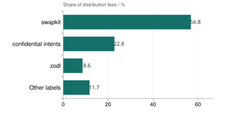

Reconciled fee-origin purchases, explicit disposal policy, and repeat paying demand after measured incentives.
ThesisCommercial adoption ≠ tokenholder income
NEAR’s distribution thesis
The stronger NEAR case is a service that reaches customers across chains, rather than a bet on native transaction counts alone.
Intents lets a customer specify an outcome and competing solvers arrange execution. Frontends and integration partners can monetize that service. The opportunity is commercially meaningful even when the customer never chooses NEAR as an investment.
Our view is conditional: rising volume and collections support a distribution opportunity. They do not establish a durable tokenholder claim on those economics. Ownership, costs, purchase policy and subsequent token disposal determine the missing link.
Test what capture would requireIs growth larger than a headline?

Scroll the chart horizontally on narrow screens. Exact values and definitions are available below.
Inspect data, method and limits
Sum daily one-sided USD notional into calendar months. Q2 and Q3 compare equal three-month periods. Monthly totals establish reported expansion; they do not by themselves distinguish recurring customers, automated routing or incentive dependence.
| Month | Volume | Gross fees | Wallet receipts |
|---|---|---|---|
| Loading saved data… | |||
Download monthly CSV · Underlying daily snapshot · Snapshot hashes
DefiLlama's adapters use NEAR-maintained source data. Agreement is not independent confirmation. Receipts exclude neither all operating costs nor later disposals.
Growth comes with a dependency.
Swapkit accounts for 56.8% of distribution fees in the saved referral-label view. The top three labels account for 88.3%. These are distribution categories, including confidential activity, not a census of independent customers.
The competing explanation is important: volume can be persistent while bargaining power remains with partners and solvers. A growing network of integrations is not yet proof of pricing power.

Scroll the chart horizontally on narrow screens. Exact values and definitions are available below.
Inspect concentration evidence
Label share = attributed distribution-fee USD / total distribution-fee USD in the query result. This excludes the separately measured verifier-fee component. Labels do not identify independently controlled users or disclose confidential customer composition.
Saved Dune query result · Query SQL · Dune queryFollow the money. Stop at what is unknown.
- ServiceCustomer pays
Route-specific interface, API and execution fees.
- AllocationPartners & collectors
Gross charges split across recipients. Wallet receipts are one proxy.
- Unproven bridgeLasting NEAR demand?
Purchase execution, costs and subsequent disposal remain incompletely reconciled.
This is a mechanism map, not a measured flow diagram. Widths do not represent money. Official fee definitions · Governance and discretionary purchases
Where the NEAR token actually enters the mechanism
Native network: NEAR pays execution gas, secures proof of stake, and collateralizes storage. The saved protocol-86 configuration has a 2.5% maximum annual issuance rate and a 30% function-call execution-gas rebate. Staking emissions redistribute ownership; they are not customer-paid external income. Storage collateral can be released when state is removed.
Intents verifier: the observed fee is one part per million (0.01 basis points) on eligible token outflows, with rounding and exceptions. It credits internal collector balances; it does not automatically buy or burn NEAR. Frontend/API fees are separate and can be much larger. Governance-controlled purchases and subsequent holding are distinct decisions.
Pinned protocol checks · Source-attributed verifier fee logic · Storage mechanics
Source metadata is not an independently reproduced deployed-WASM match. An issuance ceiling and quarterly gas fees do not constitute a net-supply census.
The strongest opposing case
Demand can arrive before the accounting is complete.
Intents may become a valuable neutral execution layer. Better distribution, deeper liquidity and commercially successful services could strengthen future NEAR demand even before a stable purchase policy is measurable. Today's missing evidence is not proof the bridge will never exist.
But a successful service can also leave value with its distributors, solvers and operating entities. We therefore underwrite conditions, rather than capitalize all gross service fees as tokenholder earnings.
What would change this view?
Fee compression, sustained partner dependence, incentive withdrawal followed by demand loss, or purchases routinely resold.
Persistent declines in paid use and collections across comparable periods, despite broader distribution.